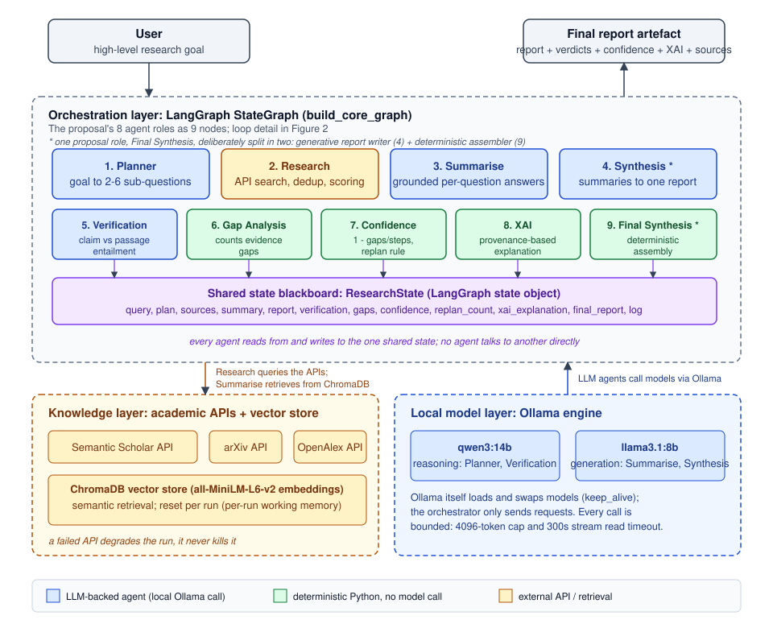
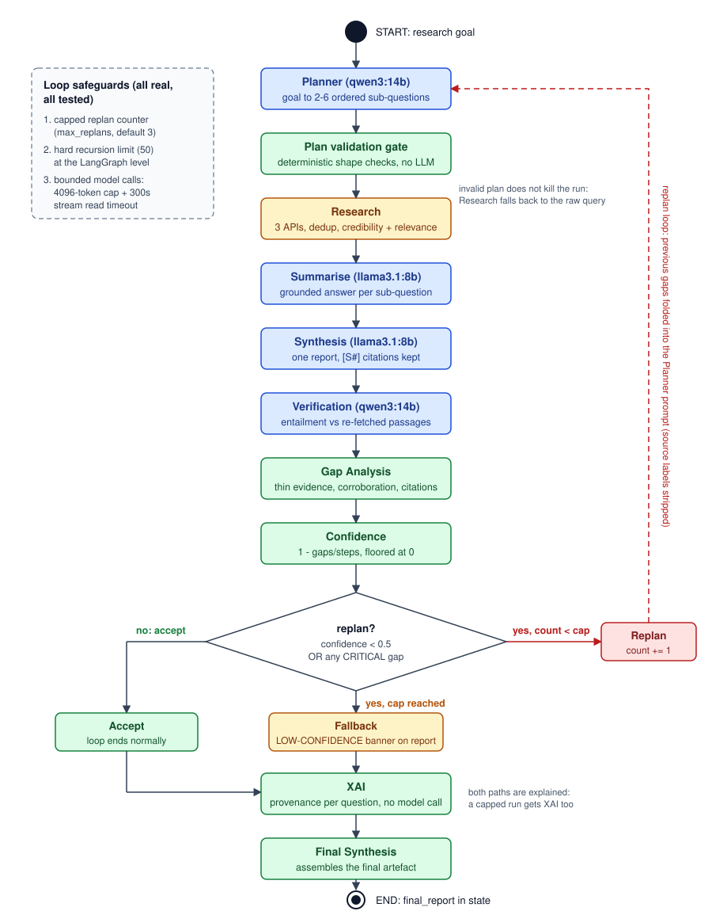

Artefacts
Coursework, code, and deliverables produced during the Intelligent Agents module.

Overview
The artefacts on this page trace the full arc of the module: from analysing where agent-based systems are used and how agents communicate, through the group design of a multi-agent research assistant, to my individual implementation and testing of that design. Together they evidence the module learning outcomes: differentiating agent architectures, applying agent techniques to a real problem involving technical risk and uncertainty, deploying appropriate tools with attention to legal, social, ethical, and professional issues, and working effectively in a virtual development team.
The centrepiece is a multi-agent research assistant for academic literature, which I named MASRA (A Multi-Agent System Research Assistant) during the individual build. The group design proposal (week 6) defined eight agent roles with BDI-inspired planning and a replanning loop. My individual implementation (week 11) realised the design on LangGraph with local models via Ollama, correcting the proposal's documented errors rather than repeating them, and adding a deterministic trust subsystem: claim-by-claim verification, gap analysis, confidence scoring, and provenance-based explainability. The execution evidence includes a verbatim system run in which the bounded replan loop reached its cap and the system flagged its own report as low confidence instead of overclaiming.
Files
Group Design Proposal
Week 6 team design of the multi-agent research assistant: eight agent roles, Tropos requirements mapping, BDI-inspired planning, local model deployment plan.
MASRA Individual Project Presentation
Week 11 presentation of the implemented system: architecture, trust subsystem, testing, and critical evaluation against the proposal.
Execution and Testing Evidence
147 passing tests and a verbatim system run showing the capped replan loop flagging its own output as low confidence.
Discussion Forum Contributions
My contributions to the three collaborative discussions (agent-based systems, agent communication languages, deep learning), with links to the forum threads and a summary of what I argued and learned.
System Diagrams
Figure 1: MASRA high-level architecture. The proposal's eight agent roles realised as nine nodes on one LangGraph StateGraph, communicating only through a shared state blackboard.

Figure 2: the agent workflow, including the plan-validation gate, the hybrid replan rule, and the capped replan loop with graceful fallback.

Code Repository
The full MASRA codebase (LangGraph agents, deterministic trust subsystem, test suite, and documentation including a DEVIATIONS.md recording every difference from the group proposal with its reason) is on GitHub: SarkaAI/multi-agent-research-assistant. The repository is private; reviewer access is shared with the module lead.